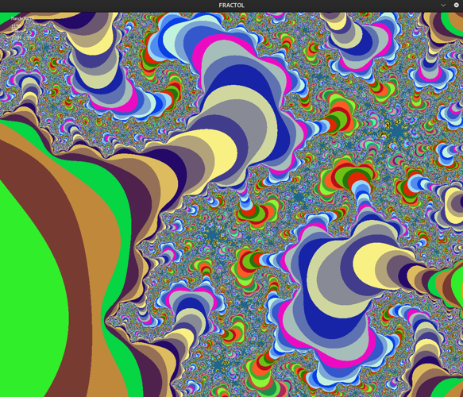

I like taking tech stuff apart to understand it. Only then does it truly make sense together. Teaching it makes it stick.
Computers are how I think. Security is where that thinking gets tested.
I break things to understand how they work. Then I build something with that knowledge. Then I explain it until I'm sure I actually got it.
That loop is what keeps me going.
HTTP/1.1 server built from scratch in C++98. Non-blocking I/O via epoll, single process, no threads. Behavior validated against NGINX.
Advanced binary exploitation. Format string attacks with %N$lx technique, x86-64 System V ABI calling convention, RSP register manipulation for control flow hijacking.
Multi-service Docker infrastructure in a VM. NGINX (TLS 1.2) as sole entry point, routing to WordPress (php-fpm) backed by MariaDB. Each service in its own container, no pre-built images.
Bonus: Redis cache, FTP server, Adminer, cAdvisor monitoring.
GitHubFull-stack real-time Pong platform. NestJS backend, React/TS frontend, PostgreSQL, Docker Compose. OAuth2 via 42 intranet, 2FA (email/TOTP), WebSocket gameplay, chat with channel moderation.
SQL injection protection, input validation, password hashing.
GitHubBash-like shell in C. Custom lexer and parser from scratch. Pipes, I/O redirections, heredoc, environment variable expansion, signal handling (Ctrl+C, Ctrl+D, Ctrl+\).
Built-ins: cd, echo, export, unset, env, exit.
GitHubFuel price comparator using official French government data. Geolocation, interactive map, search and filtering across 9,934 stations and 33,994 prices updated daily via Vercel cron.
Stack: Next.js 15, Tailwind, shadcn/ui, Supabase (PostgreSQL), Mapbox GL.
Live demoCustom offensive tools for OSCP prep and bug bounty. Port scanner: TCP/UDP, CIDR support, banner grabbing, DNS resolution, JSON output. More tools in progress: format string helper, IDOR checker, header auditor.
in progressCTF-format security challenges. Privilege escalation, reverse engineering, exploiting weak file permissions, SUID binaries, Lua and Python injection, weak crypto.
Binary exploitation chain. Stack buffer overflows, format string attacks (%n write), heap exploitation, ret2libc, shellcode injection. GDB debugging, payload crafting level by level.
Full penetration test on a target machine. Recon, enumeration, exploitation, privilege escalation, post-exploitation. Complete attack chain documented from zero access to root.
3D raycasting engine in C inspired by Wolfenstein 1992. Real-time first-person rendering, textured walls, configurable maps via .cub files.
Bonus: collision detection, weapon mechanics with recoil, audio, floor/ceiling textures.
GitHubDining philosophers problem in C. Thread creation, mutex locks, semaphores, shared memory, process forking. Deadlock prevention without data races.
GitHub
Interactive fractal renderer in C. Mandelbrot, Julia, Burning Ship, Burning Bird. Complex number math, pixel-level rendering, graphics optimization with miniLibX.
GitHubOpen to Security Engineer roles focused on detection, automation, and offensive security.